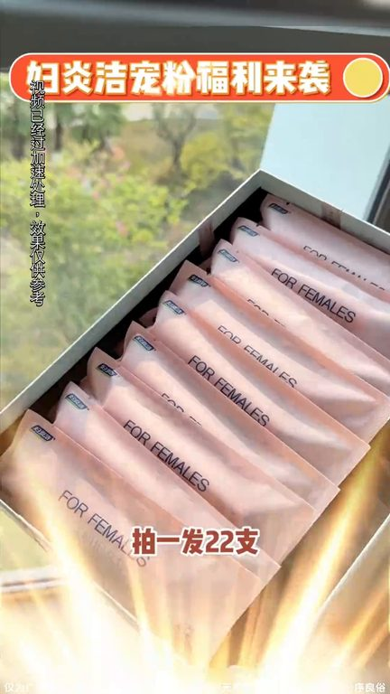

TOP 1 · 代表素材深度拆解
核心放量 点击承压
视频为原始素材 HTTPS 链接；点击后加载，建议在网络环境良好时播放。
29.5万素材消耗
1.79%CTR
33.3%类目消耗占比
-0.40pp较类目均值
表现判断
该素材是类目内第 1 名，属于“核心放量”；CTR 低于类目均值。消耗体现承接规模，CTR 体现首屏与定向效率，两项应结合判断，不能仅以单指标下结论。
表达标签
口播三段式证据
开场钩子我去洗澡吧好趁她去洗澡你就偷偷逼我一隻進去它裡面是獨立包裝的非常非常的乾淨晚上洗完澡拿出來一隻然後推到你的小花朵裡推進去拿出來就行了你今天晚上用完你第二天早上狀態都自拉好
中段论证它只會覺得今晚的你怎麼突然間不一樣這個還是我一個生傷派都為你給我推薦的她跟她老公已經結婚二十多年的感情就跟還在熱戀期一樣這個就跟咱們臉乾了需要擦臉飾沿我道理你臉上塗到DK的這個地方更應該是重保養它我讓你玩個夠我幹嘛你這二十幾隻一句你要多少錢買的三九九現在一百多不到怎麼可能還送你素用妝呢在哪買的準備先看二十二支二十二支不嚴格從粉福利來寫官方直播間
结尾转化鬼鬼大福利來了還以罰二十二支再也不用省著用了你以為上次買得夠便宜了可現在不嚴格官方給大家送福利了這給你半年的量它都是刺拋獨立分裝的裡面附含了八種的植物精粹關鍵這不是什麼雜牌而是講了二十七年的國貨老品牌那無論是日常護理還是測出時期後的呵護刷個還有貨的姐妹咱緊吞
有效点
- 消耗占比 33.3% 说明具备投放承接能力，但 CTR 较类目均值低 0.40pp
- 素材已进入类目消耗 Top，核心表达具备继续拆分测试的价值
迭代动作
- 重做前 3–5 秒：结果前置、缩短背景铺垫，并把核心人群直接写进首屏字幕
- 中段每 5–8 秒补一次画面变化或证据点，避免同景口播造成信息疲劳
- 促销口径与资质信息保持同屏可验证，结尾只保留一个明确行动指令
合规关注
钩子建立 · 2.8s
场景/问题展开 · 21.1s

卖点证据 · 48.5s
转化收口 · 66.8s
查看完整口播摘要
我去洗澡吧好趁她去洗澡你就偷偷逼我一隻進去它裡面是獨立包裝的非常非常的乾淨晚上洗完澡拿出來一隻然後推到你的小花朵裡推進去拿出來就行了你今天晚上用完你第二天早上狀態都自拉好開始前五分鐘你都把它推進去無色無味的根本發現不了它會隨著我們體溫慢慢融化它只會覺得今晚的你怎麼突然間不一樣這個還是我一個生傷派都為你給我推薦的她跟她老公已經結婚二十多年的感情就跟還在熱戀期一樣這個就跟咱們臉乾了需要擦臉飾沿我道理你臉上塗到DK的這個地方更應該是重保養它我讓你玩個夠我幹嘛你這二十幾隻一句你要多少錢買的三九九現在一百多不到怎麼可能還送你素用妝呢在哪買的準備先看二十二支二十二支不嚴格從粉福利來寫官方直播間為感謝粉絲鬼鬼大福利來了還以罰二十二支再也不用省著用了你以為上次買得夠便宜了可現在不嚴格官方給大家送福利了這給你半年的量它都是刺拋獨立分裝的裡面附含了八種的植物精粹關鍵這不是什麼雜牌而是講了二十七年的國貨老品牌那無論是日常護理還是測出時期後的呵護刷個還有貨的姐妹咱緊吞